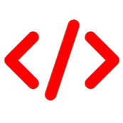

Hi there, My name is Avinash
and I am a

Work Experience
Campus Mantri - GeeksForGeeks (Jul'23 - Pre)
• Working with GFG team to create a coding culture in my institute. • Motivating students to move a step ahead and bring a coding enthusiasm in themselves.
Open Source Contributor - SSOC (Jun'23-Pre)
• Contributed few codes and raised some issues related to cpp programming in Algorithm GitHub Repo by KumanLaxmi.
Core Team Member - MediStop (Apr'23 - Pre)
• Maintaining list of schemes, programs, funds, and various other activities organised by government, NGOs, and others for the help of economically weaker section.
• Data Collection And Segregation of various health centers.

Core Team Member - Coke&Code (Mar'23 - Pre)
• Setting Problems for Competitive Programming Contests
• Maintaining Terms of Services, Code of Conduct and Privacy & Policies